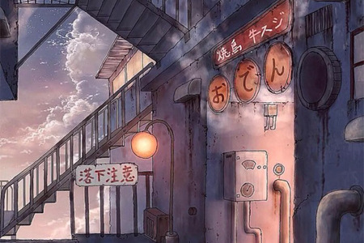

|
十张机——雨霖铃 一张机，梦蝶不觉扰幽谷，流水无意惊鹧鸪。晨露初稀， 半枯半荣，新旧两依依。 二张机，北窗卧听依阑雨，相思算作柳郎曲。往事随烟， 被衾叠置，是东南西北。 三张机，连理枝上合欢树，兰房芳心正是羞。心里念处， 料想良人，灯下正相知。 四张机，风晴日暖慵无力，千花万草眼色迷。君须早折， 一枝浓艳，芳菲配娇娘。 五张机，锦书未翻灯火枯，青梅无意引梦来。寒扰凤巢， 欲道天凉，惊醒春未了。 六张机，拖泥带水最苦处，难把离情容易抛。两处明月， 自家银汉，一切不可说。 七张机，珠江濯尽春妖娆，花间更有双蝴蝶。纷飞两处， 不言憔悴，只凭互相思。 八张机，一寸思心一寸烟，逢聚敢问几华年。栏上斜阳， 帘里彩笺，愁味写不尽。 九张机，陌上桃花试新装，娇红媚绿春意浓。百艳枝头， 莺啼鸟鸣，不舍爱人离。 十张机，少时朦胧心头肉，除去些许怎滴忍。头鬓打霜， 口齿难诉，念想微微笑。 七两三 君不见大漠烽火玉门关，沙场百战几人还？ 第一两城上羌笛暗飞声，不叫春风进洛城。 第二两笑指边关何处是，夏深峰上月正明。 第三两秋风重重吹塞上，十里连营夜寒生。 第四两燕山白雪掩青冢，轩辕台上百丈冰。 第五两半生征战亏怙恃，此时有子不如无。 第六两艳色倾城以想结，黄花枯尽逢不识。 第七两前路知己今何在，天下无人再识君。 七两三，余下三。 一钱涌泉报得十月恩， 二千来世当作连理妻， 三钱与尔长醉不愿醒。 君不见满川枫叶，尽是归人眼中血。 |
|  |